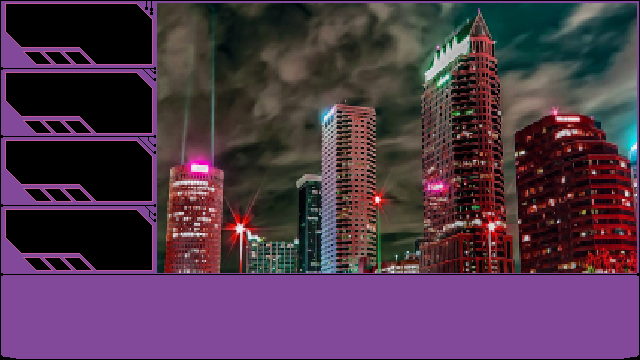
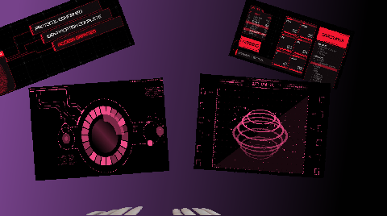
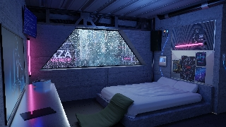
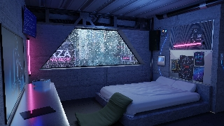
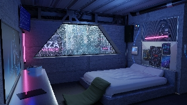
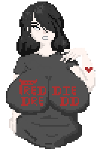

Hi, I'm CrunchRock.
I love making games and telling cyberpunk stories with Unity and Phaser3.
I also offer full stack development as a freelancer specializing in Modern JavaScript, CSS and HTML5.
Get in touch.





CyberWhiskey: Prologue is a Visual Novel Adventure game made with Javascript, Phaser3 and RenJS. Beta is available to play here February 2021

 


I'm also a growing pixel artist working with Aseprite to create original art for games and applications.
